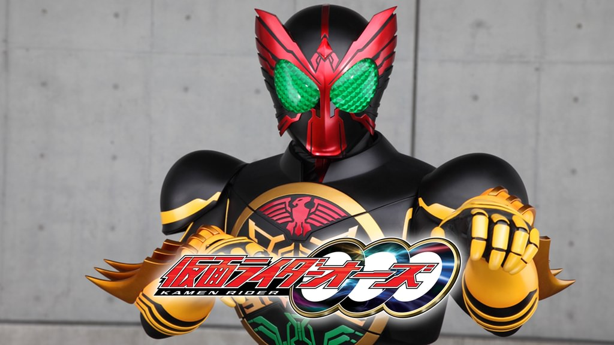
20010年から放送された「仮面ライダーオーズ」に登場する仮面ライダー
変身者は火野映司。古代のベルトに３つのコアメダルを装填し、変身する。
メダルはそれぞれ頭、腕、足に対応する。基本形態はタトバコンボ。
身長：194cm 体重：86kg パンチ力：4.5t キック力：12t ジャンプ力：ひと跳び190m 走力：100mを4.5秒程度
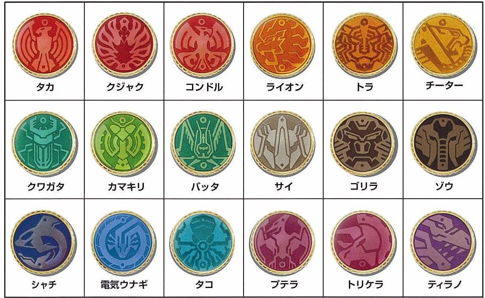
古代の錬金術師たちが人間の欲望を元に作ったメダル。
メダルには様々な生物のパワーが込められている。
オーメダルにはコアメダル、セルメダルの2種類があり、
オーズはコアメダルを使用する。
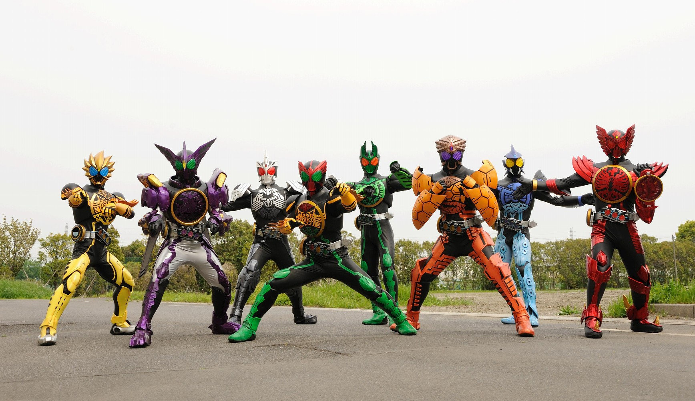
オーズはメダルの組み合わせにより、１００を超えるコンボを持つ。
「タカ」、「ライオン」、「クワガタ」等の頭部のメダル
「クジャク」、「トラ」、「カマキリ」等の腕部のメダル
「コンドル」、「チーター」、「バッタ」等の脚部のメダル
これらを組み合わせてコンボを生み出す。
また、メダルの色をそろえることで他のコンボより強いコンボを生み出すことができる。
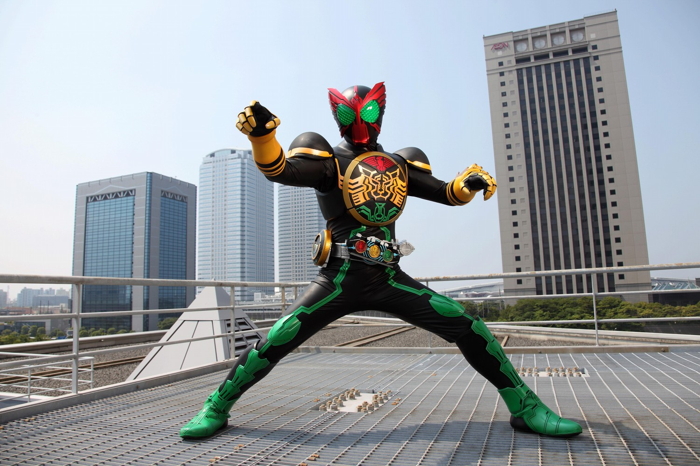
タトバコンボ
「タカ」、「トラ」、「バッタ」のメダルで変身
最もバランスがいいコンボ
なぜか色がそろっていないのに、専用の音声が鳴る
トラを持て余している感がある。
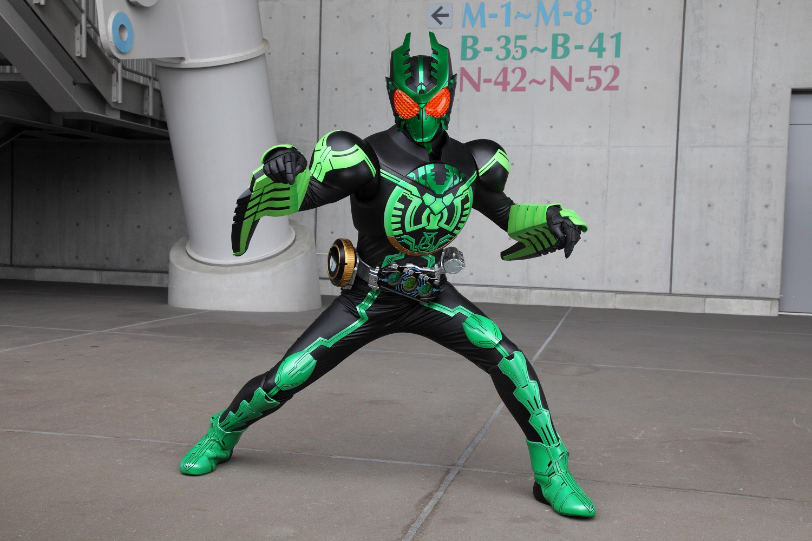
ガタキリバコンボ
「クワガタ」、「カマキリ」、「バッタ」のメダルで変身
昆虫のコンボ
自身と同じ強さの分身を無尽蔵に生み出す。
分身を生み出すたびにCG代で億単位のお金が吹っ飛ぶため、
本編では２回しかまともに登場しなかった。
分身はメダルを変えて、他のコンボになることもできる。
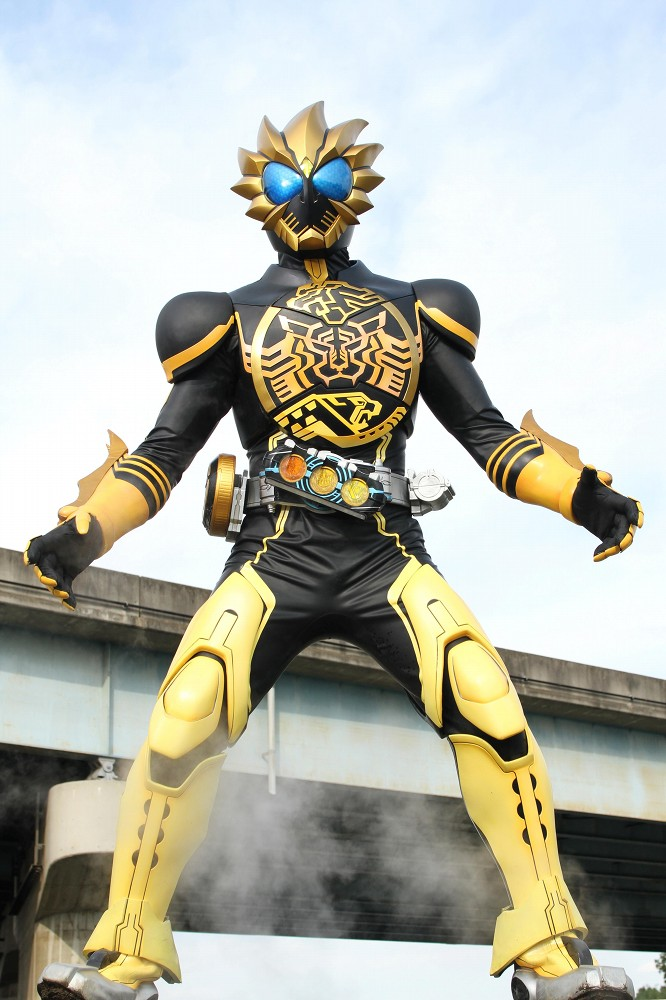
ラトラーターコンボ
「ライオン」、「トラ」、「チーター」のメダルで変身
ネコ科の動物のコンボ
頭部から強い光を放つ。高速での移動が可能で、
高速で接近し、トラクローで強襲する。
体力を多く消耗するが、使い勝手が良いコンボ
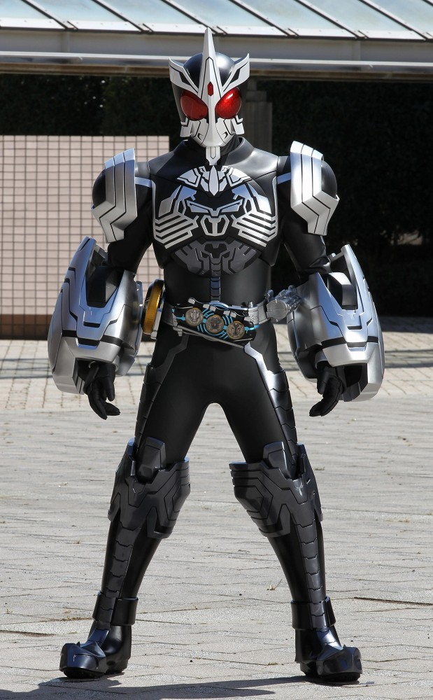
サゴーゾコンボ
「サイ」、「ゴリラ」、「ゾウ」のメダルで変身
哺乳類のコンボ
重力を操る特殊能力を持つ。
相手に重力をかけ動けなくし、相手に安全に攻撃を与えることができる。
無重力にすることも可能。
ゴリラの腕のガントレットは射出可能。
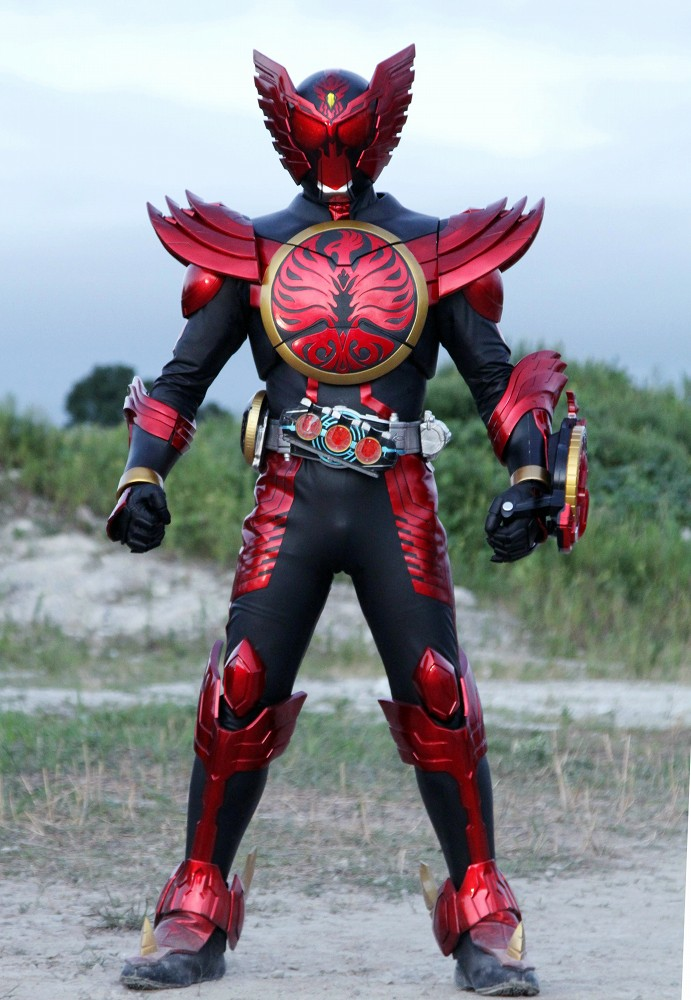
タジャドルコンボ
「タカ」、「クジャク」、「コンドル」のメダルで変身
鳥類のコンボ
コンボの中では唯一飛行能力を持つ。
腕部に装着しているタジャスピナーはメダルを用いて発光弾を放つことができる。
このコンボのみタカヘッドが変形し、強化される。
ファンからの人気が高いコンボ。
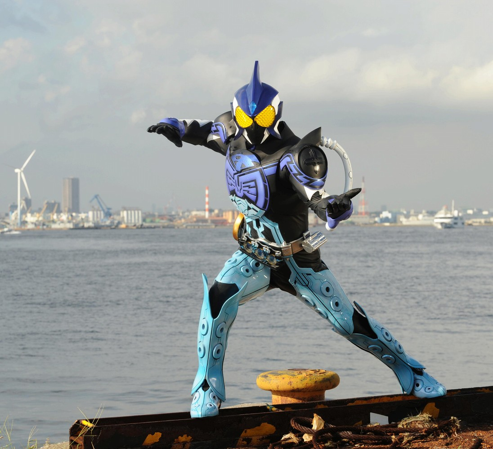
シャウタコンボ
「シャチ」、「電気ウナギ」、「タコ」のメダルで変身
海の生物のコンボ
水中戦に特化したコンボ
全身を液状にすることも可能。ウナギウィップでの電撃攻撃や
タコレッグを８本足に変形したりなどの多彩な攻撃を得意とする。
また、砂漠でも砂に潜り、水中と同じ戦い方が出来る。
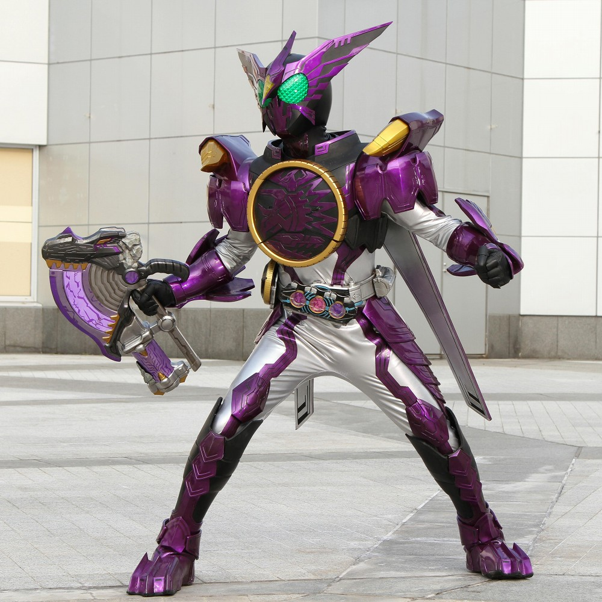
プトティラコンボ
「プテラ」、「トリケラ」、「ティラノ」のメダルで変身
恐竜のコンボ
他のコンボを圧倒する戦闘力を発揮するが暴走のリスクがある。
冷気を放ち、敵を凍らせることができる。
専用武器であるメダガブリューは驚異的な破壊力を持つと同時に
本来破壊できないはずの、コアメダルを破壊することができる。
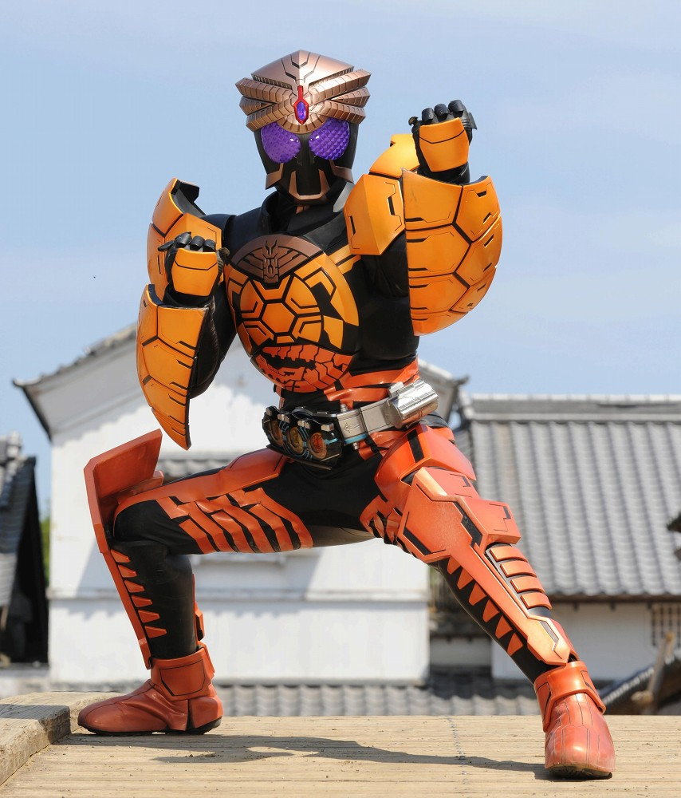
ブラカワニコンボ
「コブラ」、「カメ」、「ワニ」のメダルで変身
爬虫類のコンボ
江戸時代に徳川家に献上されていたメダルを使っており、
攻防優れたコンボ。
笛を吹くことで頭のコブラが動き、敵を嚙み砕く。
爬虫類由来の再生能力を持つ。
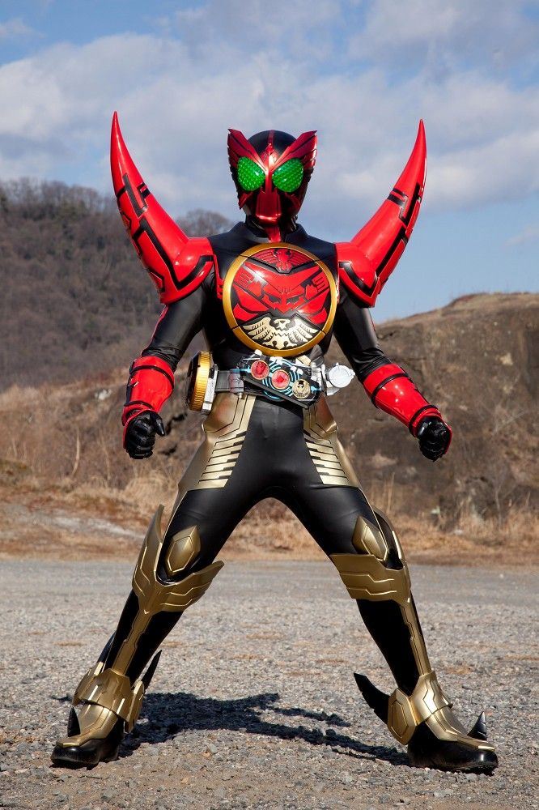
タマシーコンボ
「タカ」、「イマジン」、「ショッカー」のメダルで変身
イマジンメダルはモモタロスが変化したもので、ショッカーメダルは
秘密結社ショッカーが独自に作り上げたもの。
必殺技のタマシーボンバーは破壊力1000tのエネルギー弾を放つ。
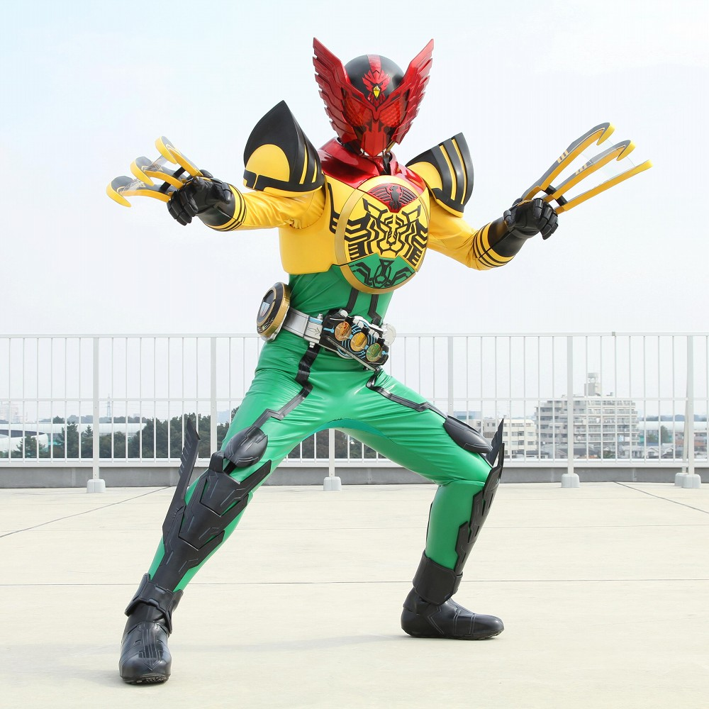
スーパータトバコンボ
「スーパータカ」、「スーパートラ」、「スーパーバッタ」のメダルで変身
未来のコアメダルを使ったコンボ
従来のタトバコンボを強化した形態で、タカヘッド等の各所が変化している。
時間停止などの能力にも対処が可能。
変身音がスーパー言い過ぎ
仮面ライダー一覧